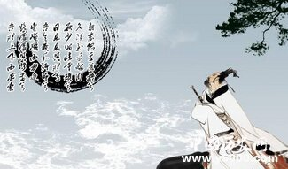
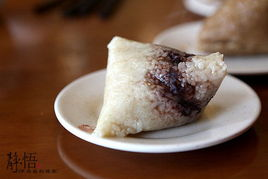
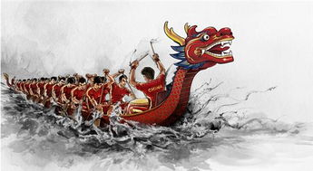
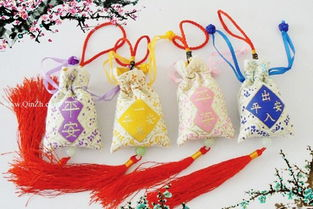
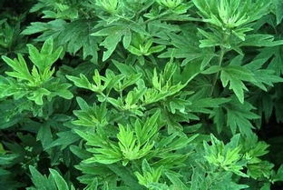

各地有关于的端午的谚语
- 端午 蛤蟆蝌蚪躲端午（北方）
- 有钱难买五月五日旱（山西）
- 赖蛤蟆躲不过五月五（北京）
- 端午请菩萨，端六发乌贼（江浙）
- 良辰当五日，偕老祝千年（江苏）
- 端午不戴艾，死去变妖怪（西北）
- 午时水饮一嘴，较好补药吃三年（山东）...>>>
端午节的由来

据《史记》“屈原贾生列传”记载，屈原，是春秋时期楚怀王的大臣。他倡导举贤授能，富国强兵，力主联齐抗秦，遭到贵族子兰等人的强烈反对，屈原遭馋去职，被赶出都城，流放到沅、湘流域。他在流放中，写下了忧国忧民的《离骚》、《天问》、《九歌》等不朽诗篇，独具风貌，影响深远（因而，端午节也称诗人节）。公元前278年，秦军攻破楚国京都。屈原眼看自己的祖国被侵略，心如刀割，但是始终不忍舍弃自己的祖国，于五月五日，在写下了绝笔作《怀沙》之后，抱石投汨罗江身死，以自己的生命谱写了一曲壮丽的爱国主义乐章。
传说屈原死后，楚国百姓哀痛异常，纷纷涌到汨罗江边去凭吊屈原。渔夫们划起船只，在江上来回打捞他的真身。有位渔夫拿出为屈原准备的饭团、鸡蛋等食物，“扑通、扑通”地丢进江里，说是让鱼龙虾蟹吃饱了，就不会去咬屈大夫的身体了。人们见后纷纷仿效。一位老医师则拿来一坛雄黄酒倒进江里，说是要药晕蛟龙水兽，以免伤害屈大夫。后来为怕饭团为蛟龙所食，人们想出用楝树叶包饭，外缠彩丝，发展成棕子。以后，在每年的五月初五，就有了龙舟竞渡、吃粽子、喝雄黄酒的风俗；以此来纪念爱国诗人屈原。

吃粽子
端午节吃粽子，这是中国人民的又一传统习俗。粽子，又叫“角黍”、“筒粽”。其由来已久，花样繁多。据记载 ，早在春秋时期，用菰叶（茭白叶）包黍米成牛角状，称“角黍”；用竹筒装米密封烤熟，称“筒粽”。东汉末年， 以草木灰水浸泡黍米，因水中含碱，用菰叶包黍米成四角形，煮熟，成为广东碱水粽。
一直到今天，每年五月初，中国百姓家家都要浸糯米、洗粽叶、包粽子，其花色品种更为繁多。从馅料看，北方多包小枣的北京枣粽；南方则有豆沙、鲜肉、火腿、蛋黄等多种馅料，其中以浙江嘉兴粽子为代表。吃粽子的风俗，千百年来，在中国盛行不衰，而且流传到朝鲜、日本及东南亚诸国。

赛龙舟
賽龙舟，是端午节的主要习俗。相传起源于古时楚国人因舍不得贤臣屈原投江死去，许多人划船追赶拯救。他们争先恐后，追至洞庭湖时不见踪迹。之后每年五月五日划龙舟以纪念之。借划龙舟驱散江中之鱼，以免鱼吃掉屈原的身体。竞渡之习，盛行于吴、越、楚。其实 ，“龙舟竞渡”早在战国时代就有了。在急鼓声中划刻成龙形的独木舟，做竞渡游戏，以娱神与乐人，是祭仪中半宗教性、半娱乐性的节目。后来，赛龙舟除纪念屈原之外，在各地人们还付予了不同的寓意。 是每年傣历6、7月（清明节后十日左右）“泼水节”举行，纪念古代英雄岩红窝。每船有600名水手，4名舵手和4名引道手。比赛时，由一人敲锣指挥，水手按锣声节奏划桨前进。也有女子参与此项活动。

佩香囊
端午节小孩佩香囊，传说有避邪驱瘟之意，实际是用于襟头点缀装饰。香囊内有朱砂、雄黄、香药，外包以丝布，清香四溢，再以五色丝线弦扣成索，作各种不同形状，结成一串，形形色色，玲珑可爱。
佩香囊，虽是一种民俗，但也是一种预防瘟疫的方法。在夏季传染病开始抬头的时候，古人为了确保孩子们的健康，用中药制成香袋拴在孩子们的衣襟和肩衣上。香囊常用的是具有芳香开窍的中草药，如芳香化浊驱瘟的苍术、山奈、白芷、菖蒲、麝香、苏合香、冰片、牛黄、川芎、香附、辛夷等药，含有较强的挥发性物质。香袋有长方形、正方形，也有三角形、棱角形、鸡心形、菱形等，上绣有花、草、虫、鸟及罗汉钱等，款式极为精美，给节日增添了无限的情趣。

悬艾叶菖蒲
民谚说：“清明插柳，端午插艾”。在端午节，人们把插艾和菖蒲作为重要内容之一。家家都洒扫庭除，以菖蒲、艾条插于门眉，悬于堂中。并用菖蒲、艾叶、榴花、蒜头、龙船花，制成人形或虎形，称为艾人、艾虎；制成花环、佩饰，美丽芬芳，妇人争相佩戴，用以驱瘴。
艾，又名家艾、艾蒿。它的茎、叶都含有挥发性芳香油。它所产生的奇特芳香，可驱蚊蝇、虫蚁，净化空气。中医学上以艾入药，有理气血、暖子宫、祛寒湿的功能。将艾叶加工成“艾绒”，是灸法治病的重要药材。
菖蒲是多年生水生草本植物，它狭长的叶片也含有挥发性芳香油，是提神通窍、健骨消滞、杀虫灭菌的药物。